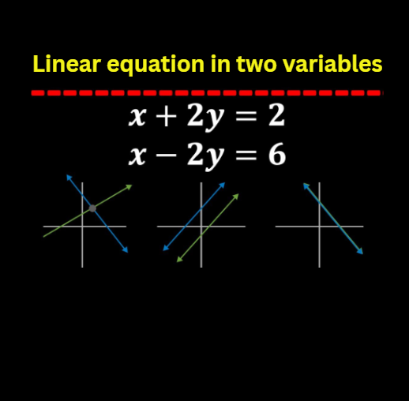
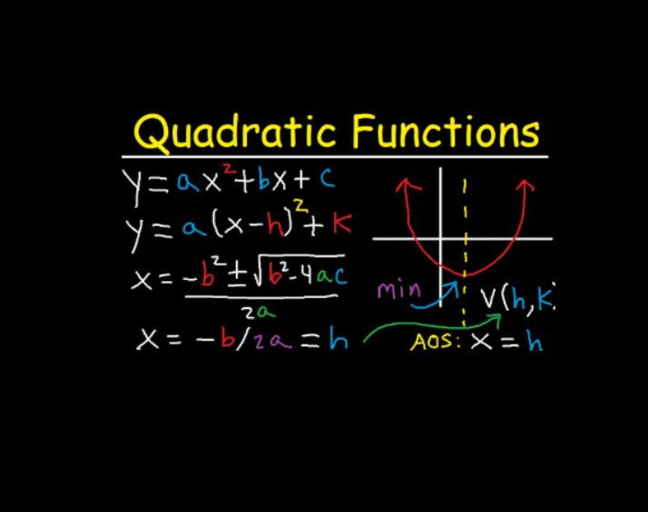
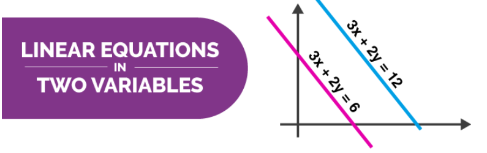
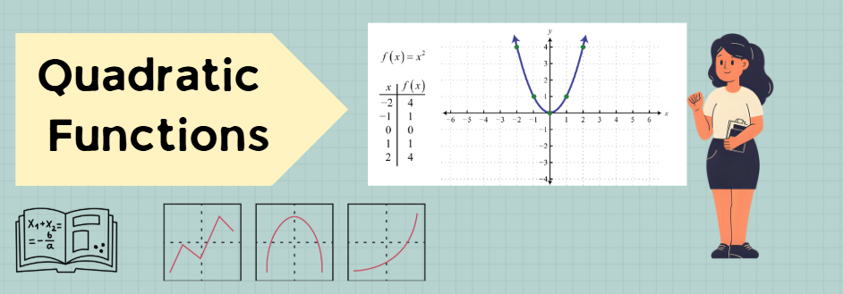

Linear Equation in Two Variables
Explore equations in the form ax + by = c. Learn how changing the coefficients affects the line, slope, intercepts, and solution points.
Welcome to a focused space for learning mathematics through clear explanations, interactive graphs, guided questions, and practical activities.

Explore equations in the form ax + by = c. Learn how changing the coefficients affects the line, slope, intercepts, and solution points.

Study functions in the form f(x) = ax2 + bx + c. Use the graph to investigate parabolas, vertices, axes of symmetry, and intercepts.

Concept: Linear equations in two variables, ax + by = c.
Objective: Students identify how a, b, and c affect a straight-line graph, including slope, x-intercept, y-intercept, and solution points.
Student Tasks:
Expected Product: A short explanation with one sketch, one verified solution point, and one sentence explaining the meaning of slope or intercepts.

Concept: Quadratic functions, f(x) = ax2 + bx + c.
Objective: Students investigate how a, b, and c affect the shape and position of a parabola, including opening direction, width, vertex, axis of symmetry, and y-intercept.
Student Tasks:
Expected Product: A completed observation table comparing three different quadratic functions and a short paragraph explaining which coefficient caused the biggest visible change.

Common Misconceptions:

Common Misconceptions:
Focus: Understanding equations in the form ax + by = c and interpreting their straight-line graphs.
Focus: Understanding f(x) = ax2 + bx + c and interpreting key features of a parabola.
This guide helps students and teachers use the website effectively for learning linear equations in two variables and quadratic functions.
My Mathematics Learning Website is an interactive learning resource for exploring graphs, equations, activities, misconceptions, and assessments. It supports visual learning through sliders, guided questions, images, and Kahoot! assessment links.